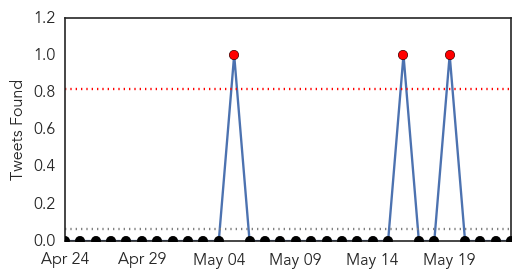

30 Day Trends
Web: 3 alerts, 2 warnings
Twitter: 0 alerts, 0 warnings
Top Articles:
- 0.999
- The most from the coast
- 0.999
- South Sudan: MSF rapidly scales up response to contain cholera outbreak
- 0.998
- UNICEF warns of worsening South Sudan cholera outbreak
- 0.997
- MSF rapidly scales up response to contain cholera outbreak - South Sudan
- 0.928
- UNICEF South Sudan Humanitarian Situation Report #23, Reporting Period 20 – 27 May 2014 - South Sudan
- 0.903
- Diarrhoea Hits Harare Suburbs - Zimbabwe
- 0.880
- Ireland to donate further €2m to South Sudan
- 0.574
- 2013 Mary Rines Thompson Award Winner
- 0.510
- Abyei’s Agok hospital runs out of medicines
Top Tweets:
-
No tweets found for May 23, 2014
Web/News Articles

Tweets
Article Locations

Article Confidences